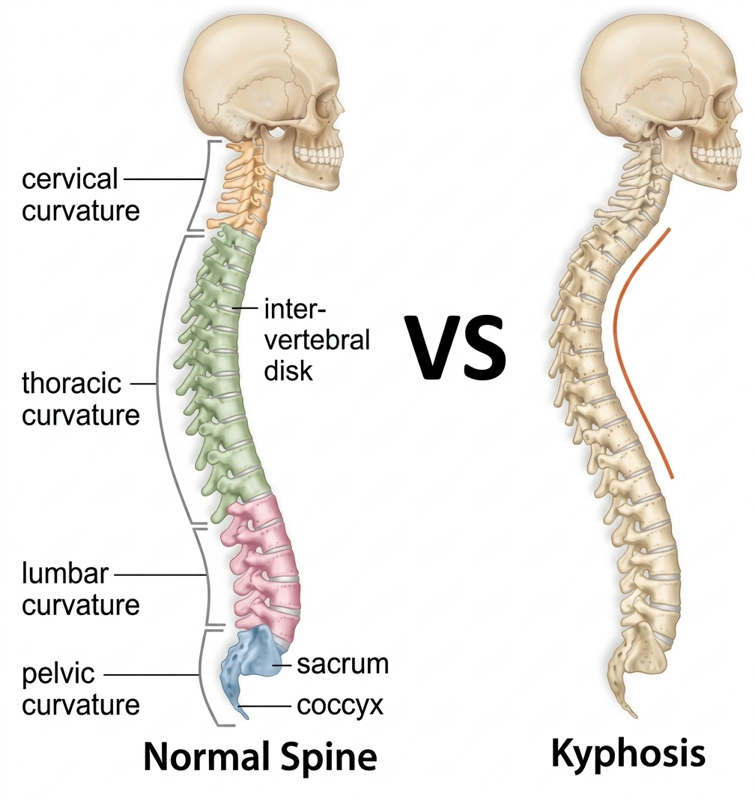
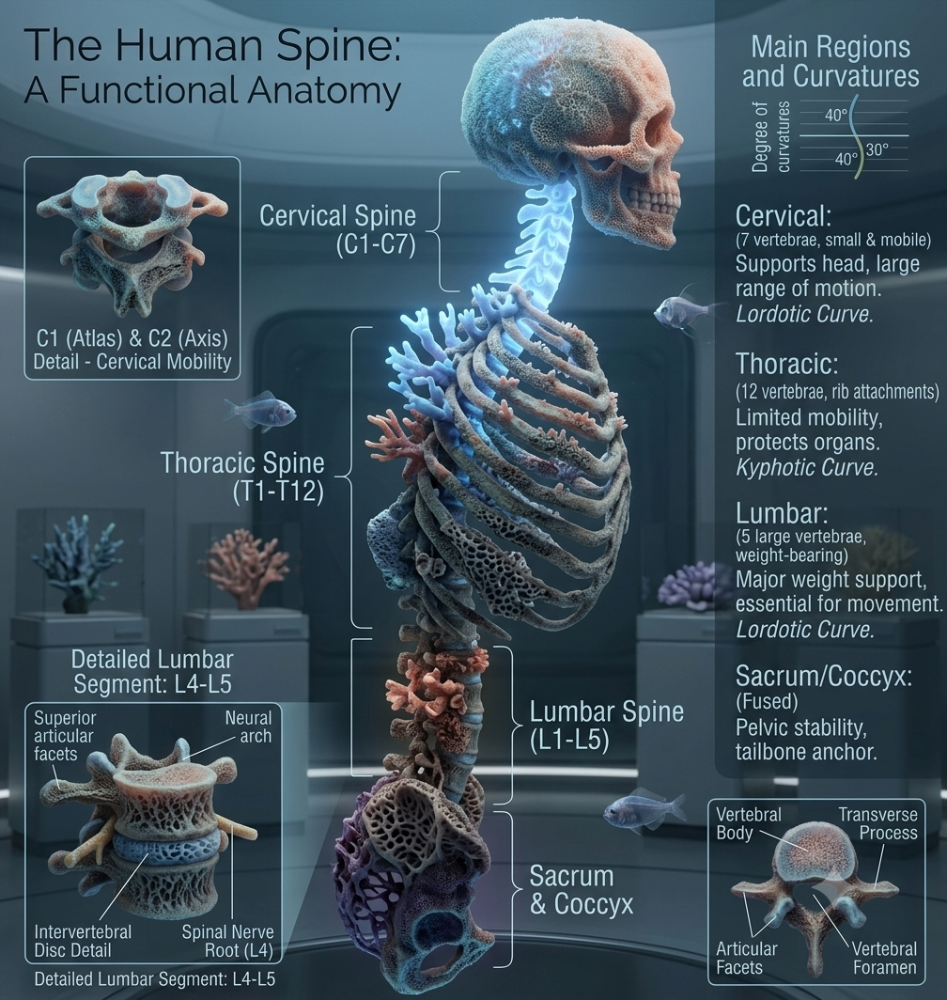

Spinal Health
Assessment
Explore AI-powered tools to understand and assess spinal kyphosis conditions for educational purposes

What is Kyphosis?
Kyphosis is a spinal condition characterized by an excessive outward curvature of the upper spine, creating a rounded or "hunchback" appearance. While some degree of curvature is normal, kyphosis occurs when this curve becomes more pronounced than typical.
The normal spine has natural curves that help distribute weight and provide flexibility. In kyphosis, the thoracic (upper back) region curves excessively forward, which can lead to both cosmetic concerns and functional problems.


How Kyphosis Develops
Common Causes:
- Postural Kyphosis: Most common type, often develops from poor posture habits, especially in adolescents who spend long hours hunched over devices or desks.
- Scheuermann's Disease: A structural condition that typically appears during adolescence (ages 10-15), where vertebrae develop wedge shapes causing fixed curvature.
- Congenital Kyphosis: Present from birth due to malformed vertebrae or failure of spinal segments to separate properly during development.
- Degenerative Kyphosis: Age-related changes including disc degeneration, vertebral compression fractures, and muscle weakness.

Who Does Kyphosis Affect?
Children (0-10 years)
Congenital forms may be present at birth. Early intervention is crucial for severe cases.
Adolescents (10-18 years)
Peak time for Scheuermann's disease development. Postural kyphosis also common due to growth spurts and lifestyle factors.
Adults (40+ years)
Degenerative changes become more common, especially in postmenopausal women due to osteoporosis risk.
Key Statistics: Scheuermann's kyphosis affects approximately 1-8% of the population, with peak onset between ages 10-15. Postural kyphosis is much more common but often less severe. The condition affects both males and females, though Scheuermann's disease shows a slight male predominance.
Signs and Symptoms
Physical Appearance:
- Visible rounded back or "hump"
- Forward head posture
- Shoulders that appear uneven
- Prominent shoulder blades
- Difficulty standing completely upright
Symptoms:
- Upper back pain and stiffness
- Muscle fatigue from compensatory posturing
- Limited spinal flexibility
- In severe cases: breathing difficulties
- Rare cases: neurological symptoms
When to Seek Medical Attention
Consult a healthcare professional if you notice progressive spinal curvature, persistent back pain, breathing difficulties, or neurological symptoms. Early diagnosis and treatment can prevent progression and improve outcomes.
Explore Our AI Prediction Tool
Our machine learning model can help assess kyphosis risk based on surgical parameters. This tool is designed for educational purposes and medical research applications.
Learn About the ModelImportant Medical Disclaimer
This application is an educational tool designed for learning about machine learning in healthcare contexts. It should never be used for actual medical diagnosis or treatment decisions. The predictions are based on statistical models and historical data patterns, not real-time clinical assessment.
Always consult with qualified healthcare professionals, including orthopedic specialists or spine surgeons, for accurate diagnosis and treatment of spinal conditions. If you suspect you or someone else may have kyphosis, seek proper medical evaluation and imaging studies.